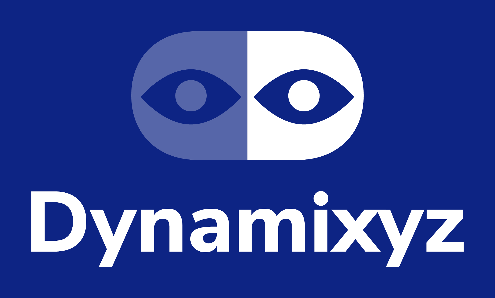

Dynamixyz Live Link Plugin for UE4 documentation¶
Thank you for your interest in the Dynamixyz Live Link Plugin for Unreal Engine 4.
This documentation explains how to use the Dynamixyz Live Link Plugin in UE4. Should you have any question, our support team will be happy to help you make a good start with the whole Dynamixyz product range. We do hope these various software pieces will bring you complete satisfaction.
The Dynamixyz Team
Documentation reading order¶
If you are familiar with the Unreal Engine mechanics and the blueprint system, you can jump to the Installation from UE Marketplace section.
If you feel more like a beginner, you can follow the Table of content order.
Check out our tutorial video on Vimeo !
Table of content¶
- Overview
- Installation from UE Marketplace
- Installation from sources
- Project set-up
- Liven up your rig
- Prerequisite
- Basic concept
- Connecting a Dynamixyz Source
- Creating an Animation Blueprint
- Creating a Dynamixyz Live Link Retarget Asset
- Modifying Dynamixyz Live Link Plugin configuration in a shipped project
- Animate several characters in realtime with Dynamixyz Live Link Plugin
- Character Blueprint association (optional)
- Miscellaneous
- Packaging
- Troubleshooting
- Changelog